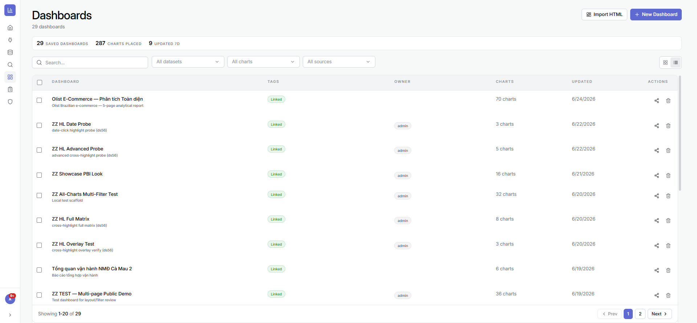
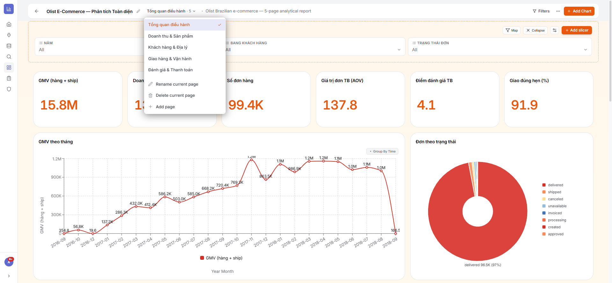
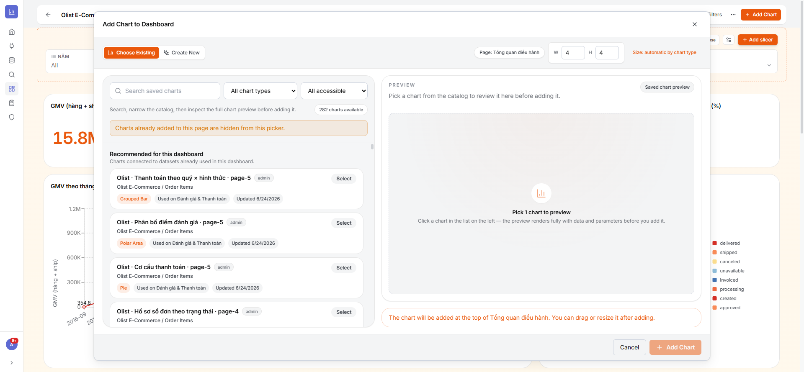
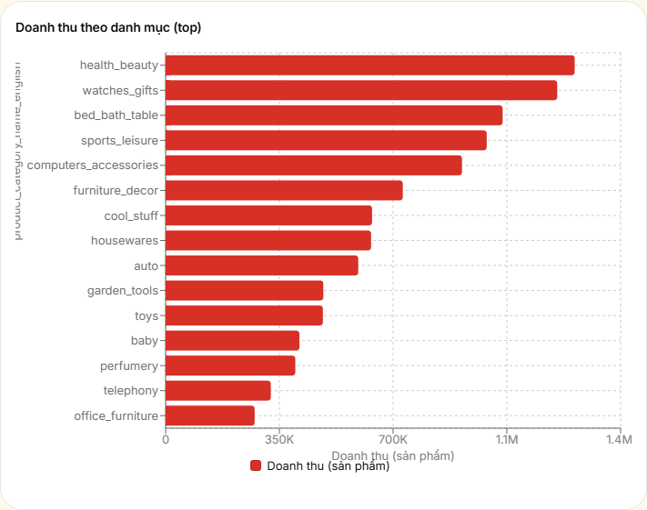
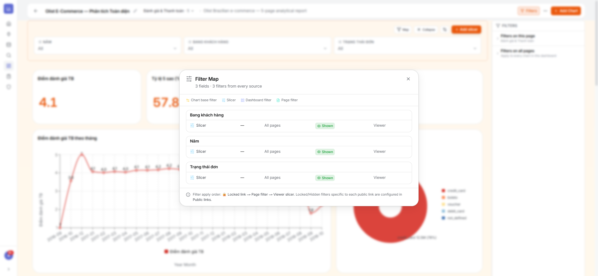
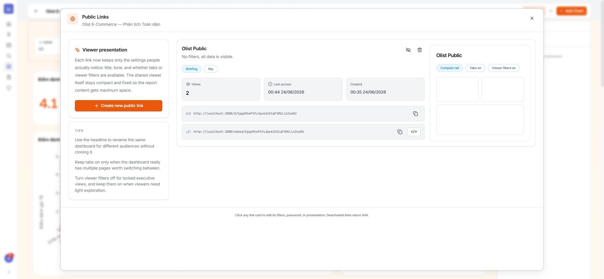
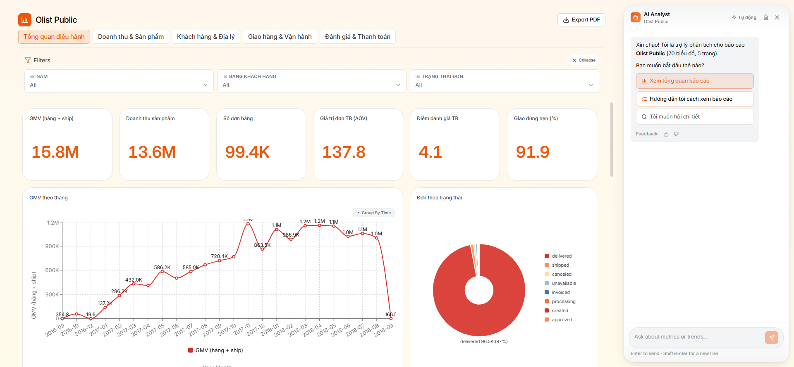
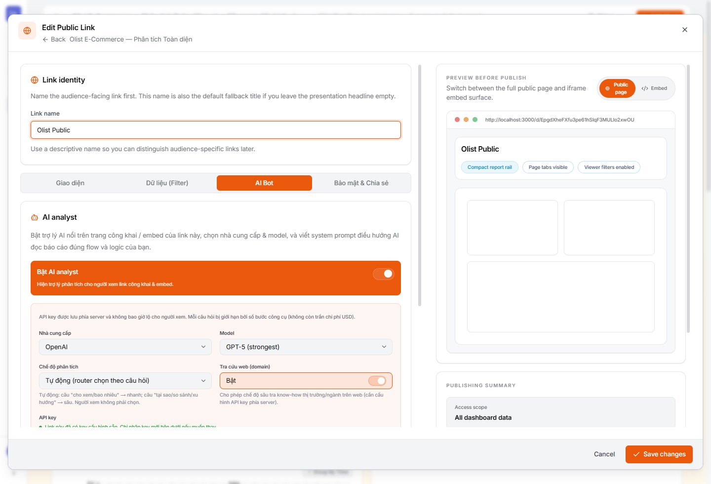

4.1Danh sách Dashboard & báo cáo đa trang
Là gì: tạo mới, Import HTML, tìm/lọc, chia sẻ. Báo cáo hỗ trợ nhiều trang — chuyển trang, thêm/đổi tên/xoá trang.
⚙ Cách làm
- Mở Dashboards → New Dashboard (đặt tên, mô tả).
- Dùng bộ chọn trang trên tiêu đề để chuyển trang; bấm Add page để thêm trang mới.


4.2Thêm biểu đồ, bố cục & nhãn dữ liệu
Là gì: thêm biểu đồ có sẵn hoặc tạo mới, kéo-thả & resize tile, “Tidy layout” tự căn hàng, chế độ Canvas tự do, và các widget (text, đếm ngược, ảnh, hình khối). Biểu đồ hiển thị nhãn số liệu rõ ràng.
⚙ Cách làm
- Bấm Add Chart, tìm biểu đồ có sẵn hoặc tạo mới, rồi đưa vào báo cáo.
- Kéo để di chuyển, kéo góc để chỉnh kích thước tile; dùng ⋯ → Tidy layout để tự căn hàng.
- Dùng ⋯ → Add widget để chèn text/đếm ngược/ảnh/hình khối.



4.3Slicer, Filter & Filter Map
Là gì: Slicer trên canvas, Filter pane theo phạm vi (toàn báo cáo / từng trang), lọc theo từng chart (HAVING), cross-highlight (bấm một điểm để lọc các chart khác). Filter Map tổng hợp mọi filter đang tác động và nguồn gốc của chúng.
⚙ Cách làm
- Bấm Add slicer để thêm bộ chọn lên canvas (vd Năm, Khu vực).
- Bấm Filters để mở Filter pane và thêm bộ lọc cấp trang hoặc toàn báo cáo.
- Bấm vào một điểm dữ liệu trên biểu đồ để lọc chéo các biểu đồ khác; bấm lại để bỏ.
- Mở ⋯ → Filter map để xem toàn bộ bộ lọc đang áp dụng.

4.4Tuỳ biến giao diện (Theme)
Là gì: 5 mục Mẫu / Màu / Chữ / Thẻ / Biểu đồ với 8 preset dựng sẵn và bảng màu dữ liệu, có xem trước trực tiếp.
⚙ Cách làm
- Bấm ⋯ → Theme.
- Chọn một Mẫu dựng sẵn, hoặc tinh chỉnh từng mục Màu/Chữ/Thẻ/Biểu đồ.
- Xem preview tức thì rồi Save appearance.

4.5Chia sẻ công khai, Nhúng & Xuất PDF
Là gì: tạo link công khai (kèm khoá/ẩn filter, mật khẩu, giao diện riêng), nhúng iframe vào website khác, xuất PDF nhiều trang. Số link không giới hạn — mỗi đối tượng một link riêng.
⚙ Cách làm
- Link công khai: ⋯ → Public links → Create new public link; tuỳ chọn đặt mật khẩu, khoá/ẩn bộ lọc, chỉnh giao diện; rồi Copy link.
- Nhúng: dùng URL dạng
/embed/<token>trong cùng hộp thoại để chèn iframe. - Xuất PDF: ⋯ → Export PDF, chọn hướng giấy/khổ/trang → Export.



4.6Trợ lý AI trên báo cáo ĐIỂM MẠNH MỚI
Một nhà phân tích AI sống ngay trong báo cáo: nó đọc đúng dữ liệu người dùng đang xem, trả lời bằng ngôn ngữ tự nhiên kèm trích dẫn biểu đồ nguồn và độ tin cậy, biết phân tích sâu (vì sao, xu hướng, dự báo, so sánh) và hướng dẫn người mới cách đọc. Người xem không cần biết SQL hay BI.
① Hai “bộ não”, tự chọn theo câu hỏi
Bot có 2 chế độ và tự định tuyến (không bắt người dùng chọn, không tốn thêm lượt gọi AI — phân loại bằng quy tắc, hiểu tiếng Việt cả khi không dấu):
- Nhanh (Normal) — cho câu tra cứu: “doanh thu tháng này bao nhiêu”, “cho xem top 10…”. Trả lời nhanh.
- Sâu (Thinking) — cho câu phân tích: “tại sao…”, “so sánh…”, “xu hướng/dự báo…”. Bot lập kế hoạch đọc rồi gọi nhiều công cụ.
- Mặc định Tự động; người xem có thể bấm chip để ép Nhanh/Sâu.
② Chủ động ngay khi mở
- Tóm tắt “điều đáng chú ý” + câu hỏi gợi ý dựa trên chính các biểu đồ của báo cáo (tính sẵn, không gọi AI nên mở rất nhanh).
- Trợ lý dẫn dắt (briefing): đoán lĩnh vực/vai trò/trọng tâm để “đọc” báo cáo theo đúng góc nhìn của bạn.
③ Biết làm gì — bộ công cụ phân tích
Bot không “đoán” mà thực sự truy vấn dữ liệu báo cáo qua các công cụ:
- Đọc & tra cứu: liệt kê biểu đồ, lấy tóm tắt/thống kê (tổng, min/max, trung bình, top-5, outlier), lấy dữ liệu một biểu đồ, xem bộ lọc đang áp dụng, tra từ điển nghiệp vụ (ý nghĩa cột).
- Phân tích sâu (chế độ Sâu): so sánh kỳ (MoM/QoQ/YoY), bóc tách nguyên nhân thay đổi (ai/yếu tố nào đóng góp), dự báo kỳ tới, đọc xu hướng chắc chắn (loại kỳ dở dang), so sánh một nhóm với phần còn lại, tương quan giữa 2 biểu đồ, phát hiện bất thường, phân bố (P90/Pareto), khoan sâu & gộp nhóm.
- Tính toán: bộ tính an toàn cho các phép cộng/trừ/tỷ lệ, luôn ghi nguồn số.
④ Tra cứu web (tuỳ admin bật)
Khi được phép, ở chế độ Sâu bot có thể tìm kiếm web, đọc một URL, và đối chiếu chỉ số với chuẩn ngành/thị trường — dữ liệu web được tách bạch (gắn nhãn) khỏi số liệu báo cáo.
⑤ Đáng tin: trích dẫn — không bịa — đúng phạm vi
- Trích dẫn nguồn: mọi con số gắn
[chart:N]trỏ về biểu đồ gốc; có nhãn độ tin cậy HIGH / MED / LOW. - Không bịa: dữ liệu không đủ thì nói thẳng, không suy diễn; “0 dòng” khác “không có dữ liệu”.
- Đúng phạm vi link: bot luôn tuân thủ bộ lọc đã khoá/ẩn của link công khai và slicer người xem — không “lách” để lộ dữ liệu ngoài phạm vi.
- Tuỳ chọn tự rà soát (self-critique) thêm một lượt để loại mâu thuẫn & ép trích dẫn.


⑥ Cách dùng (người xem)
⚙ Thao tác
- Trên báo cáo (bản công khai/embed/nội bộ), bấm nút trợ lý AI (góc dưới phải).
- Bấm một câu hỏi gợi ý, hoặc tự gõ câu hỏi bằng tiếng Việt.
- (Tuỳ chọn) bấm chip chế độ để ép Nhanh/Sâu; theo dõi “AI đang đọc” khi phân tích sâu.
- Xem câu trả lời kèm trích dẫn → bấm gợi ý để đào sâu; đánh giá 👍/👎.
⑦ Cấu hình cho quản trị (theo từng link)
Bot bật/tắt & tinh chỉnh riêng cho mỗi link công khai (trong trình sửa Public Link → tab AI Bot):
⚙ Cấu hình
- Bật “AI analyst” cho link.
- Chọn nhà cung cấp (Anthropic / OpenAI / Gemini) + model; API key lưu phía server, không bao giờ lộ cho người xem (người xem cũng có thể dùng key riêng — chỉ lưu tạm trong phiên, không lưu trữ).
- Chọn chế độ phân tích (Tự động/Nhanh/Sâu) và bật/tắt Tra cứu web.
- Viết system prompt (“ngữ cảnh báo cáo”) để hướng bot đọc đúng nghiệp vụ của bạn; bật tự rà soát nếu cần độ chính xác cao.
